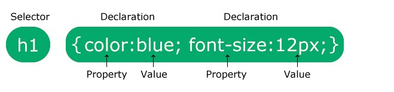
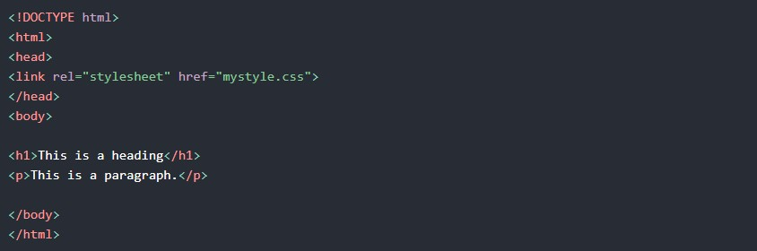
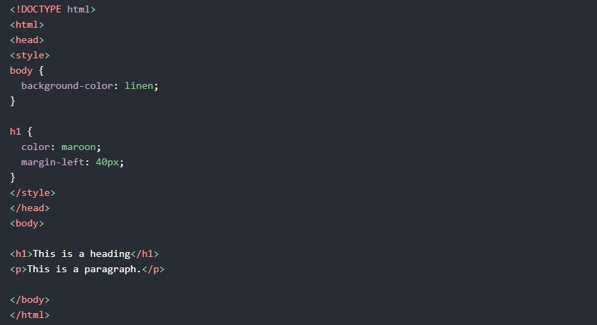
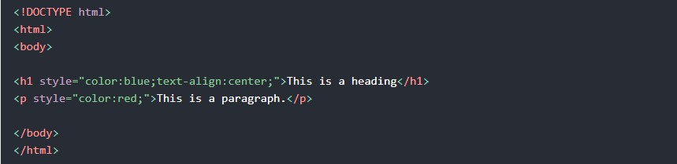

Cascading Style Sheets- Folhas de Estilo em Cascata- tem por objetivo realizar a estilização de conteúdo de documentos HTML.
Podem definir cores,fontes,espaçamentos dentre outros.
Exemplo:

Existem três maneiras de inserir uma folha de estilo:
Com uma folha de estilo externa, você pode alterar
a aparência de um site inteiro alterando apenas um arquivo!
Cada página HTML deve incluir uma referência ao arquivo de folha de estilo externo dentro do elemento < link>, dentro da seção head.
Exemplo
Estilos externos são definidos dentro do elemento < link>, dentro da seção < head> de uma página HTML:

Uma folha de estilo interna pode ser usada se
uma única página HTML tiver um estilo exclusivo.
O estilo interno é definido dentro do elemento < style>,dentro da seção head.
Exemplo
Os estilos internos são definidos no elemento < style>, dentro da seção < head> de uma página HTML:

Um estilo embutido pode ser usado para aplicar
um estilo único a um único elemento.
Para usar estilos embutidos, adicione o atributo de estilo ao elemento relevante. O atributo style pode conter qualquer propriedade CSS.
Exemplo
Os estilos inline são definidos no atributo "style" do elemento relevante:
